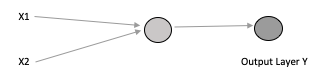
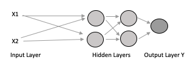
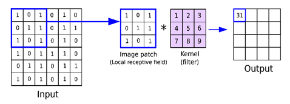
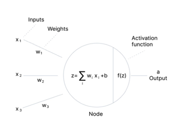

Introduction to Neural Network Classification¶
Note
Most of this section is authored by Kaniz Farzana, at student at Texas Tech University who employs ML to determine biological inputs to a system dunamics model from image interpretation. Her work not only has to classify, but also quantify members of each class - a challenging problem indeed. I am thankful she was able to share this with me.
The neural network is inspired by the brain which consists of neurons. The human brain is thought to process information by employing an array of many individual neurons to handle and process complex tasks.
An artificial neuron is something that holds a number or value, specifically a number between 0 and 1. An FFNm(Feed Forward Neural network) is commonly seen in its simple form as a single-layer perceptron and a multi-layer perceptron is called a Neural network. A perceptron can be explained as a single neuron that receives input. We might have inputs something like X1 and X2 and those two values go into this perceptron. They are processed and some output value is generated often referred to as Y. This is a very simple diagram to display how the perceptron works.

Most useful things cannot be solved with a single neuron (like the above) perceptron; so an array is employed as a multilayer perceptron.

If we add a second and third layer and send those inputs X1 and X2 to the second layer and set the output of the second layer into the third layer, then from the third layer to the final output layer, we get the multilayer perceptron. All the layers between the input and output layers are called hidden layers. A neural network can have several hidden layers, the wider the layers the higher the capacity of the network to identify features/objects.
In this model, the number of inputs is multiplied by the weights as they enter the layer. The sum of the weighted input values is then obtained by adding each value together. The strength of a connection between neurons is expressed in terms of weights. Weight can have a value between 0 and 1. The neural network adjusts its weights during training to create output values that are more accurate by comparing the outputs of its nodes with the desired values. The process is defined as back-propagation. In such cases, each hidden layer within the network is adjusted according to the output values produced by the final layer. There are three important types of neural networks:
Artificial Neural Network (ANN)
Convolutional Neural Network (CNN)
Recurrent Neural Network (RNN)
Feed Forward Neural Network ANN is a group of multiple perceptrons or neurons which is also known as FFN(Feed Forward Neural network). The deep feedforward neural network is also known as multilayer perceptrons which is the foundation of most deep learning models (Upadhyay. Y, 2019). It is the earliest and simplest form of neural network where data is fed forward from one layer to the next layer. The reason why it is called feed-forward is that the data or the flow of information takes place in the forward direction only from input to output. There is no coming back and feedback(loops) like from the output of some layer does not influence the same layer. Data is fed forward from the input layers, travels through the hidden layers (As many), and exits to the output unit. After that, we can predict a class label. The opposite of FFN is a recurrent network where certain pathways are cycled. Networks like CNN and RNN are just some special cases of Feedforward neural networks which are mostly used for supervised machine learning tasks where we know the target result and we want our network to achieve that.
Convolutional Neural Network
CNN is a popular and special type of neural network or an area of deep learning that specializes in pattern and image recognition. In CNN it has an input layer, output layer, many hidden layers, and millions of parameters that can learn complex objects and patterns. It has a convolutional network, pooling layers, and fully connected layers. Starting with the input, input is the individual pixels of the image. Every image is stored in a digital device as a matrix of pixel values. Every image has three channels, red, green, and blue: RGB, which you can imagine as three 2D matrices stacked upon one another.

If we assume our input has just one channel, the luminance of the image, with the value of each pixel represented in eight bits. In other words, the pixel values will range from zero to 255, with zero indicating darker transparent luminance and 255 as bright. Digital systems store all types of sensor data and other information in this fashion. Now that we understand the format of the input, let’s finally delve into where the real magic happens, in the convolutional layer. Convolution is the process involving a combination of two functions that produce the other function as a result. In CNN, the input image is subjected to convolved with the use of filters that produces a Feature map. In CNN, this operation is implemented in what is referred to as a feature detector, filter, or most commonly, a kernel. In the network, filters are weights and bias vectors that are created randomly. In CNN, rather than having distinct weights and biases for each neuron, different neurons share the same weights and biases. A large number of filters can be produced, each of which extracts a distinctive property from the input. You can think of a kernel as a mini matrix, orders of magnitude smaller than the input. In a convolution operation, then, the kernel moves across the input image, taking the dot product of the two matrices and then saving the values to a new matrix, dubbed the feature map of the original image. If a kernel is initialized with the values in a specific configuration, it can be used to transform an input image and find various patterns. When loaded with the appropriate values and convolved with the input image produces an output that highlights various edges in the photo. kernels are essentially ways to do fast computation and produce a new output. In cases, where we’re doing it with an image, Now, when we look at a typical image, there are various edges, shapes, textures, etc, that stack together to make various objects in the overall image we are looking at. At the start of a convolutional network, the types of kernels we use would be quite simple and more geometric, detecting things such as edges, corners, and simple shapes and patterns, like a circle, for instance. Additionally, each convolutional layer can have multiple kernels that produce multiple feature maps of their own. For each of the convolved pixels in our feature map, a non-linearity function was also applied, in this instance, a ReLU. and the need for nonlinearity in neural networks so our feature maps are more adaptable to real-world data. the next layer in CNNs after the convolution is a pooling layer. Pooling layers are used to downsample our feature maps, keeping the most important parts and discarding the rest, and primarily done to reduce the overfitting rate, and so that calculations can be sped up in later layers due to the reduced spatial size of the image. The type of pooling our network implements is max pooling, in which we take another kernel and slide it across our input feature maps. And the largest pixel value in that region is what is saved to our new output feature map. So now with the defining layers of the convolutional neural network understood, A, the convolutional layer which extracts features, and then B, the pooling layer which down samples the feature maps, the next step is repeating these layers to build up more abstraction in the network. As stated earlier, in later layers of the network, more complex kernels are incorporated that detect shapes, objects, and other complex structures, which is done by leveraging the previously generated feature maps and their detected simple features to build more complex ones. This is essentially the definition of abstraction. The first part is referred to as feature extraction. Hence the second part of a convolutional network is the classifier. This part is comprised of fully connected layers, similar to a feedforward network. Difference between FNN and CNN Topic FNN CNN Data Mostly Tabular Data Image Data The direction of Data flow No backward link Has forward or backward link or both Spatial relationship No Yes
• A convolution neural network is a type of neural network which has some or all convolution layers. A feed-forward neural network is a network where data is fed forward from one layer to the next layer and which is not recursive. neurons in this layer were only connected to neurons in the next layer. • CNN is just a special case of Feedforward neural networks but it can be a recurrent neural network too, FNN has no backward link, and doesn’t form a cycle to the neuron of the previous layer. That means all FNN can be CNN but all CNN cannot be FNN because CNN is also trained with backward propagation. • Convolution refers to the fact that form a dimension of an input you have, a filter is applied to it to take some of the interesting features from that dimension and predict the output. Whereas in FNN a neuron from the layer close to the input layer gets feature values, applies to them weights and bias and uses an activation function to the result then send the results to the next layer and exits to the output layer. Applications of FNN and CNN FNN
An FNN has been used to forecast the COVID-19 outbreak in Iraq with 10–6-1 architecture and a linear output unit with 73 weight options (Aljaaf Ahmed,2021). COVID-19 lagged values of infectious, deaths, and recovered have been separately fed to the network in an ensemble learning paradigm. A total of 20 networks were fitted with random starting weights and then averaged to forecast the upcoming COVID-19 spread in Iraq, including new infections, survivors, and deaths.
Haldorai M , in 2020 used FFN for evaluating sustainable urban environmental quality. He fed the model with a large-size U.S. air pollution dataset as input and performed a canonical correlative analysis based on a feature selection algorithm to select key pollutant features. He concluded that his model performed well when compared with other contemporary works.
Another application of cascade feed-forward neural network to predict coagulant dose. (Wadker D et al 2021). Levenberg-Marquardt Training Algorithm and Bayesian Regularization Training Algorithm were used in the development of the CFFNN Model to forecast coagulant dose. R is discovered to be between 0.914 and 0.947 when hidden nodes are altered from 15 to 60 during the creation of these models.
CNN
The major use of CNN is image recognition and classification and so far, the only use case involving medical imaging in the healthcare industry. Other areas where CNN is using largely are Search Engines, Social Media, and Recommender Systems. Big companies like Facebook, Google, and Amazon use image tagging which involves the recognition of objects even sentiment analysis of the image tone (Sharma. P., 2021). A visual search involving comparing input images to the access database, and recommender engines involving the use of CNN to make suggestions (ex. Amazon makes suggestions in the “you might also like” area based on user-expressed behavior. Some scholarly articles that used CNN in recent times such as :
One recent study of CNN was assessed to predict and model online product reviews’ helpfulness using 1D CNN (Olmedilla M et al., 2022). CNN encoding was able to identify not only helpful reviews but also its most significant characteristics. 1D-CNNs used text data and analyzed using text mining techniques. After collecting data it went into a training and testing set and was used for fitting the weights for the classifiers. The Gensim library in Python was used for the implementation of Word2Vec with a vector dimensionality of 100. They got an accuracy of 66% as most misclassified elements were found from neural reviews but no misclassified elements were found from ‘helpful’ or ‘not helpful’ reviews
A study performed by Mousavi Z., in 2022 proposed CNN as very effective in detecting COVID-19 and other lung infections diseases using chest X-ray imagery. This study assists radiologists in making rapid and accurate detections. They divided their X-ray dataset into 7 different scenarios bacterial, healthy, viral, and four COVID-19 CASES. A cross library was used to perform this work and CNN proved to be a robust network and achieved 99% accuracy.
Tang Yehai carried out a study of runoff forecasting based on multi-model (multiple regression (MR), random forest (RF), and convolutional neural network-gradient boosting decision tree (CNN-GBDT)) precipitation integrations. Results showed that the CNN-GBDT method is superior to the above two methods in improving the precision of rainfall forecasts. Python Libraries If I understand the question right, many python libraries do ANN/CNN but if I do not want to install python libraries I need to write the code of CNN from the scratch with convolutional layers, backpropagation, and fully connected layer. Or we can modify any model or transfer learning to serve a different purpose. Keras is such a python library used extensively for neural network computations.
Question 2. Identify and describe the 5 most commonly employed activation functions (assuming there are 5) that are used in NN models. Under what conditions does a particular activation function work well, and under what conditions does it fail?
Answer: An activation function decides whether or not a neuron should be activated, meaning it will decide whether the neuron’s input to the network is important or not in the process of prediction using simpler mathematical operations (Baheti, 2022 ). Its role is to derive output from a set of input values to feed a node or a layer. More specifically it transforms the summed weighted input from the node into an output value to be fed in the next hidden layer or as output.

There are 3 major types of Neural Networks Activation Functions
Binary Step Function It depends on the threshold value that decides whether a neuron should be activated or not. Like if the input is greater than it, then the neuron is activated otherwise deactivated meaning its output will not be passed to the next hidden layer. Problems It cannot provide multi-value outputs, cannot be used for multi-class classification problems The gradient of the step function is zero which causes a hindrance in the backpropagation process.
Linear Active Function The activation is proportionate to the input in a linear activation function, also referred to as “no activation” or the “identity function” (multiplied by 1.0). The function just spits out the value it was given, doing nothing to the weighted sum of the input. Problems It’s not possible to use backpropagation All layers of the network will collapse into one layer if a linear activation function is used. No matter what the number of layers in the neural network, the last layer will still be a linear function of the first layer
Non-Linear Activation Functions This function solves the following limitations of linear activation functions as they allow backpropagation because now the derivative function would be related to the input, and it’s possible to go back and set weights. They also allow the stacking of multiple layers of neurons as the output would now be a non-linear combination of input passed through multiple layers.
The five most common nonlinear activation functions are
Sigmoid or Logistic Activation Function
Tanh or Hyperbolic tangent Activation Function
ReLU Function
Leaky Relu Function
Parametric ReLU Function Sigmoid or Logistic Activation Function The Sigmoid Function curve looks like an S-shape. It takes any real values as input and exits to output ranging from 0 to 1 Functionality Widely Used especially in predicting probability, since the probability of anything only exists between 0 and 1 so sigmoid is the right choice. The function is differentiable and follows a gradient preventing jumps in the output values. Limitations
It saturates and kills the gradient
For a big positive or big negative integer, the output of the sigmoid saturates (i.e. the curve becomes parallel to the x-axis). As a result, there is essentially no gradient in these areas. The network won’t learn if the local gradient is very modest because it will kill the gradient. ReLU provides a solution to the vanishing gradient issue. 2. Sigmoid outputs are not zero-centered which is undesirable because it runs the risk of unintentionally introducing zigzag dynamics in the gradient updates for the weights. Tanh or Hyperbolic tangent Activation Function It gives a value in a range of [-1, 1] for a real number. Tanh’s output value approaches 1.0 when the input is larger (more positive), whereas it approaches -1.0 when the input is smaller (more negative). Limitations Like the sigmoid activation function, it has the issue of vanishing gradients. In addition, the tanh function has a substantially steeper gradient than the sigmoid function. ReLU Function ReLU stands for Rectified Linear Unit. ReLU has a derivative function and enables for backpropagation while still being computationally efficient, despite giving the impression of being a linear function. The fundamental issue here is that not all of the neurons are activated simultaneously by the ReLU function. Only if the output of the linear transformation is less than 0 will the neurons become inactive. Advantages
As only a certain number of neurons are activated, the ReLU function is far more computationally efficient when compared to the sigmoid and tanh functions.
ReLU accelerates the convergence of gradient descent towards the global minimum of the loss function due to its linear, non-saturating property. Limitations
The gradient has a value of zero when the graph is on the negative side. As a result, some neurons’ weights and biases are not updated during the backpropagation process. This may result in dead neurons that never activate. All the negative input values instantly become zero, which reduces the model’s capacity to correctly fit or train from the data. Leaky ReLU Function Leaky ReLU is an improved version of ReLU function to solve the Dying ReLU problem as it has a small positive slope in the negative area. Advantage The benefits of Leaky ReLU are same to those of ReLU, and it also supports backpropagation even for negative input values. This small adjustment ensures that the gradient of the graph’s left side is non-zero for negative input values. As a result, we wouldn’t see any dead neurons there anymore. Limitations • Sometimes the predictions may not be consistent for negative input values. • It makes the learning of model parameters time-consuming.as the gradient for negative values is a small value which makes the process lengthy Parametric ReLU Function Parametric ReLU is another variant of ReLU that aims to solve the problem of gradient’s becoming zero for the left half of the axis. This function provides the slope of the negative part of the function as an argument ‘a’. By performing backpropagation, we can learn the most appropriate value of ‘a’. Advantages The parameterized ReLU function is utilized when the leaky ReLU function is still unable to address the issue of dead neurons and the necessary information is not properly sent to the following layer. Limitations It sometimes performs differently for different problems depending upon the value of slope parameter a.
For your research, I understand you are image processing to feed information to a model of biological behavior. What kind of NN are you using and why did you select it?
Answer: For the present work, I am performing a sensitivity analysis on the hydrological variables based on different vegetation classifications ranging from detailed field mapping to simplified computer-based classification from remotely sensed data and calibrated into the EDYS model. Since employing NN was not necessary for the current project, I am using object-based picture analysis (OBIA). For the current study OBIA served the purpose. However, I plan to conduct additional research on hydrological simulation in the near future, including rainfall-runoff prediction taking into account vegetation change and stream flow variation under unsteady climatic circumstances. Later I want to cross-validate the result with a physically based model over the same time period. I will be collecting daily climatic, rainfall, temperature, solar radiation, and streamflow time series data of watersheds. The goal would be capturing physical relationships between input variables and streamflow. Several artificial neural networks have been tested to conduct hydrological simulations using NN. Since ANN has been previously tested for streamflow prediction I want to explore recurrent neural networks such as GRU (Gated Recurrent Unit) and LSTM (long short-term memory) because they are capable of capturing temporal features and comparing the result with CNN. A typical CNN architecture used for time series data is called TCNN (Temporal Convolutional Neural network). I want to explore that to compare the results with the simulation found from a physical/mechanistic-based model.
References¶
Aljaaf AJ, Mohsin TM, Al-Jumeily D, Alloghani M. A fusion of data science and feed-forward neural network-based modeling of COVID-19 outbreak forecasting in IRAQ. J Biomed Inform. 2021 Jun;118:103766. doi: 10.1016/j.jbi.2021.103766. Epub 2021 Apr 22. PMID: 33895377; PMCID: PMC8061626
Haldorai, A., Ramu, A. Canonical Correlation Analysis Based Hyper Basis Feedforward Neural Network Classification for Urban Sustainability. Neural Process Lett 53, 2385–2401 (2021). https://doi.org/10.1007/s11063-020-10327-3
María Olmedilla, M. Rocío Martínez-Torres, Sergio Toral, Prediction and modelling online reviews helpfulness using 1D Convolutional Neural Networks, Expert Systems with Applications, Volume 198, 2022, 116787, ISSN 0957-4174, https://doi.org/10.1016/j.eswa.2022.116787.
Tang, Y., Wu, Q., Soomro, Seh. et al. Comparison of different ensemble precipitation forecast system evaluation, integration and hydrological applications. Acta Geophys. (2022). https://doi.org/10.1007/s11600-022-00877-6
Wadkar, D. V., Karale, R. S., & Wagh, M. P. (2021). Application of cascade feed forward neural network to predict coagulant dose. Journal of Applied Water Engineering and Research, 1–14.
https://developersbreach.com/convolution-neural-network-deep-learning/
https://towardsdatascience.com/regularization-techniques-for-neural-networks-e55f295f2866
https://anhreynolds.com/blogs/cnn.html
https://www.v7labs.com/blog/neural-networks-activation-functions